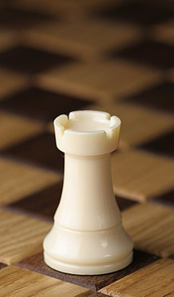
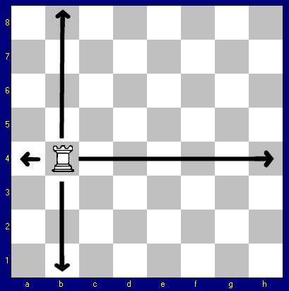

Nel gioco degli scacchi la torre è uno dei pezzi a disposizione dei giocatori. Le torri vengono rappresentate come delle "torri d'assedio". Nell'antico gioco indiano erano raffigurate da torri sorrette su degli elefanti.
 